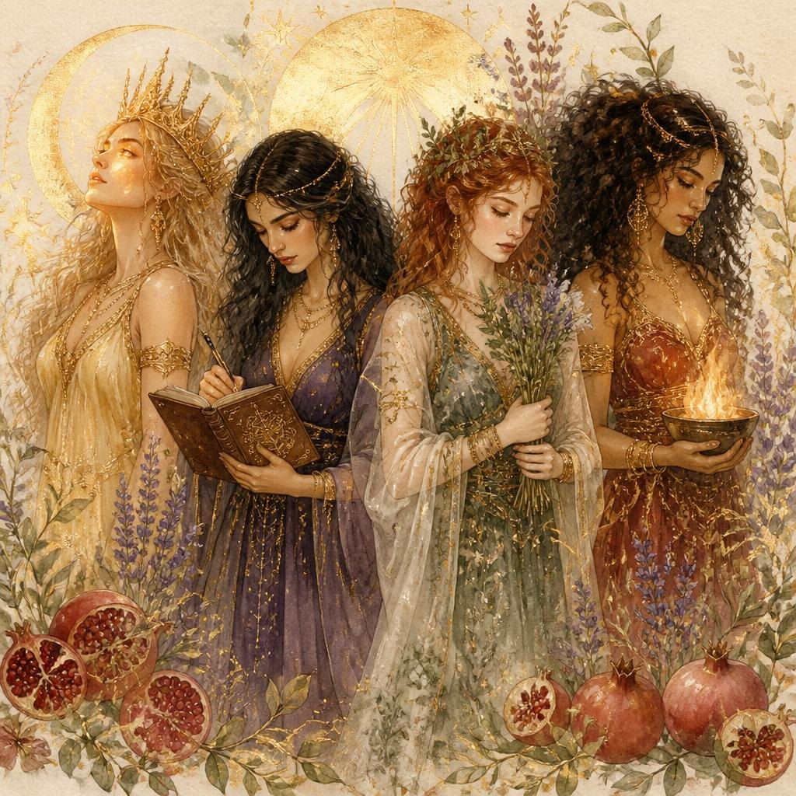

Quiz · Bitácora Atemporal
¿Cuál diosa
habita en ti?
Cuatro arquetipos viven en ti — Artemisa, Atenea, Perséfone y Hestia. Cada una carga una energía distinta. Este test de 12 preguntas revela cuál tiene más voz en este momento de tu vida — y cuál está esperando ser despertada.
- Gratis
- 12 preguntas
- 5 minutos
- Sin registro
